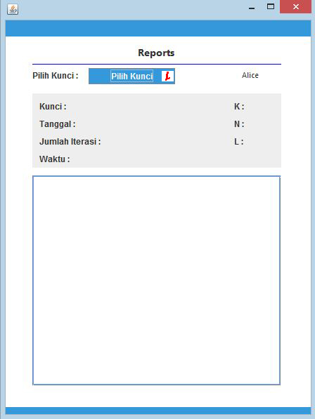

Keterangan
1. Pilih Gambar Button untuk memilih gambar/citra dengan ekstensi .png. Setelah citra dipilih, jenis, ukuran dan dimensi citra akan ditampilkan
2. Pilih Kunci Button untuk memilih kunci yang dihasilkan dari proses sinkronisasi. Kunci yang dipilih akan ditampilkan pada komponen text area kunci
3. Enkripsi (Left) Button untuk melakukan enkripsi dengan algoritma Vigenere Cipher
3. Dekripsi (Right) Button untuk melakukan dekripsi dengan algoritma Vigenere Cipher
4. Save Button untuk menyimpan citra hasil enkripsi/dekripsi

Keterangan
1. Pilih Kunci Button untuk memilih kunci yang dihasilkan dari proses sinkronisasi kedua TPM. Data yang akan ditampilkan meliputi data tanggal, waktu, jumlah iterasi dan hasil perhitungan TPM.
Langkah - Langkah
1. Setiap user memilih nilai K, N dan L
2. User menginisialisasi TPM dengan mengklik tombol Inisialisasi TPM. TPM dengan bobot acak akan ditampilkan.
3. User melakukan sinkronisasi dengan mengklik tombol Mulai. Jika proses sinkronisasi telah selesai, kunci akan ditampilkan pada komponen textarea kunci.
4. Simpan kunci dengan mengklik tombol Simpan
5. Klik Form Enkripsi untuk melakukan enkripsi gambar dan klik Form Dekripsi untuk melakukan dekripsi gambar
6. Klik Form Report untuk melihat data yang berkaitan dengan kunci seperti waktu sinkronisasi, jumlah iterasi hingga perhitungan TPM.